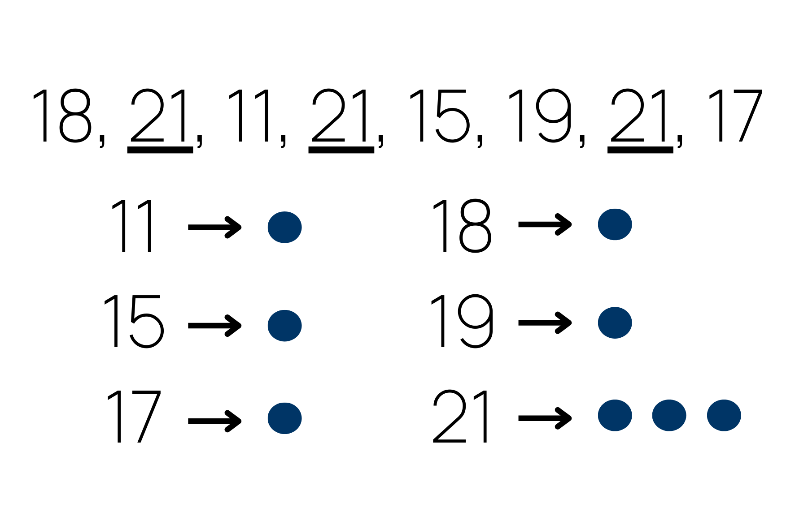

Moda
A Importância da Moda na Análise de Dados: Uma Abordagem Detalhada
Introdução
A moda é uma medida estatística que desempenha um papel fundamental na análise de dados, fornecendo informações valiosas sobre os valores mais frequentes em um conjunto de dados. Agora, iremos explorar em detalhes o conceito de moda, sua definição, propriedades e aplicações, destacando sua relevância em diferentes contextos analíticos.
Definição e Cálculo
A moda é definida como o valor ou valores mais frequentes em um conjunto de dados. Ao contrário da média e da mediana, que buscam identificar uma tendência central, a moda se concentra na identificação dos valores mais comuns ou recorrentes.
Existem três possibilidades em relação à moda em um conjunto de dados:
1. Moda Unimodal: Ocorre quando um único valor é o mais frequente. Por exemplo, em um conjunto de dados {3, 4, 5, 5, 6, 7}, a moda é 5, pois é o valor que se repete com maior frequência.
2. Moda Bimodal: Ocorre quando dois valores têm a mesma frequência máxima. Por exemplo, em um conjunto de dados {2, 2, 4, 6, 6, 7, 7}, as modas são 2 e 7, pois ambos os valores se repetem igualmente.
3. Moda Multimodal: Ocorre quando mais de dois valores têm a mesma frequência máxima. Por exemplo, em um conjunto de dados {1, 2, 2, 3, 3, 4, 4}, as modas são 2, 3 e 4, pois todos esses valores se repetem com igual frequência.
Propriedades e Vantagens
A moda possui várias propriedades que a tornam uma medida de análise útil:
1. Facilidade de cálculo: O cálculo da moda é simples e direto, uma vez que envolve a identificação do valor mais frequente no conjunto de dados. Isso torna a moda uma medida de tendência central prática e de fácil interpretação.
2. Valores não afetados por outliers: Ao contrário da média aritmética, que é sensível a valores extremos, a moda é uma medida robusta e não é afetada por valores discrepantes. Isso torna a moda útil quando há presença de outliers ou quando se deseja avaliar a distribuição dos valores mais comuns.
3. Aplicação em dados qualitativos: A moda pode ser aplicada tanto a dados quantitativos (valores numéricos) quanto a dados qualitativos (categorias ou características). Ela permite identificar as categorias mais frequentes em um conjunto de dados, auxiliando na compreensão de padrões e preferências.
Aplicações
A moda é amplamente utilizada em diferentes áreas, desempenhando um papel importante em diversos contextos, tais como:
1. Análise de dados categóricos: A moda é especialmente útil na análise de dados categóricos, onde as variáveis são representadas por categorias ou classes. Por exemplo, em pesquisas de opinião, a moda pode identificar as respostas mais comuns em uma escala de preferência.
2. Estudos de mercado: A moda é aplicada em estudos de mercado para identificar os produtos, marcas ou serviços mais populares entre os consumidores. Isso auxilia as empresas na compreensão das preferências do público-alvo e na tomada de decisões estratégicas para atender às demandas do mercado.
3. Análise de séries temporais: A moda também pode ser utilizada na análise de séries temporais para identificar valores recorrentes ao longo do tempo. Isso é útil na detecção de padrões sazonais ou tendências em dados históricos, permitindo prever possíveis ocorrências futuras.
4. Pesquisas educacionais: Na área educacional, a moda pode ser usada para identificar as habilidades ou temas mais frequentemente abordados em um currículo escolar. Isso auxilia os educadores a adaptarem suas estratégias de ensino e a focarem nos conteúdos mais relevantes para os alunos.
5. Estudos de saúde: A moda é aplicada em estudos de saúde para identificar os sintomas mais frequentes em uma determinada população ou para analisar a prevalência de certas condições médicas. Isso auxilia na identificação de problemas de saúde mais comuns e no desenvolvimento de estratégias de prevenção e tratamento adequadas.
Considerações Finais
A moda desempenha um papel fundamental na análise de dados, fornecendo informações sobre os valores mais frequentes em um conjunto de dados. Sua facilidade de cálculo, robustez em relação a valores discrepantes e aplicabilidade em dados qualitativos a tornam uma medida valiosa em diversas áreas, como estatísticas descritivas, análise de dados categóricos, estudos de mercado, análise de séries temporais, pesquisas educacionais e estudos de saúde.
No entanto, é importante ressaltar que a moda pode não ser suficiente para fornecer uma visão completa da distribuição dos dados, especialmente quando há uma grande variabilidade ou quando não há uma única moda clara. Nesses casos, a combinação da moda com outras medidas de tendência central, como a média e a mediana, pode fornecer uma compreensão mais abrangente dos dados.
Ao compreender e utilizar adequadamente a moda, é possível obter insights significativos, identificar padrões e tomar decisões informadas com base em uma análise estatística sólida.
Exemplo 1
Em uma sapataria durante um dia foram vendidos os seguintes números de sapato: 34, 39, 36, 35, 37, 40, 36, 38, 36, 38 e 41. Qual o valor da moda desta amostra?
Solução
Observando os números vendidos notamos que o número 36 foi o que apresentou maior
frequência (3 pares), portanto, a moda é igual a:
Mo = 36
Exemplo 2
Se uma linha de ônibus registra, em quinze ocasiões, os tempos de viagens, em minutos: 18, 21, 11, 21, 15, 19, 21, 17 ;Qual o valor da moda desta amostra?
Solução
Observando os números registrados notamos que o número 21 foi o que apresentou maior frequência (3 pares), portanto, a moda é igual a:
Mo = 21
